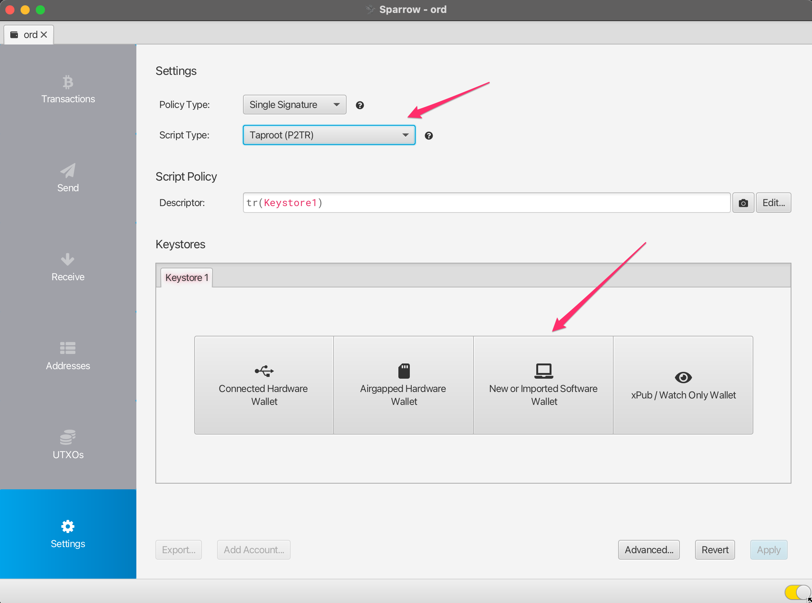
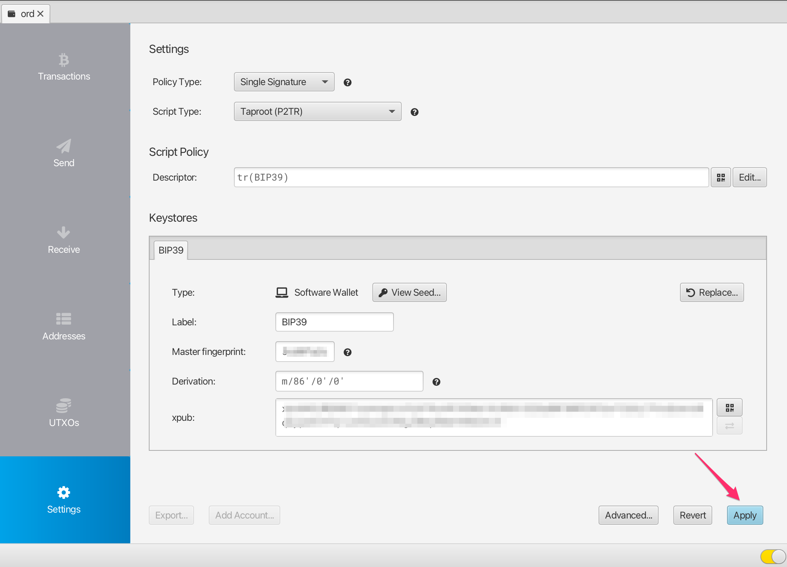

Pagkolekta ng mga Inscription at Ordinal gamit ang Sparrow Wallet
Users who cannot or have not yet set up the ord wallet can receive inscriptions and ordinals with alternative groestlcoin wallets, as long as they are very careful about how they spend from that wallet.
Nagbibigay ang gabay na ito ng ilang pangunahing hakbang kung paano gumawa ng Sparrow Wallet na tugma sa ord at maaring ma-import sa ord
⚠️⚠️ Warning!! ⚠️⚠️
Sa pangkalahatan, kung gagawin mo ang diskarteng ito, dapat mong gamitin ang wallet na ito gamit ang Sparrow software bilang receive wallet lamang.
Do not spend any gros from this wallet unless you are sure you know what you are doing. You could very easily inadvertently lose access to your ordinals and inscriptions if you don't heed this warning.
Wallet Setup at Receiving
I-download ang Sparrow Wallet mula sa releases page para sa iyong partikular na operating system.
Piliin ang File -> New Wallet at gumawa ng bagong wallet na tinatawag na ord.

Palitan ang Script Type sa Taproot (P2TR) at piliin ang `New or Imported Software Wallet\ option.

Piliin ang Use 12 Words at pagkatapos ay i-click ang Generate New. Iwanan ang passphrase na blangko.

Ma-ge-generate para sa iyo ang isang bagong BIP39 12 word seed phrase. Isulat ito sa isang lugar na ligtas dahil ito ang iyong backup para makakuha ng access sa iyong wallet. HUWAG ibahagi o ipakita ang seed na pariralang ito sa iba.
Kapag naisulat mo na ang seed phrase i-click ang Confirm Backup.

Muling i-enter ang seed phrase na iyong isinulat, at pagkatapos ay i-click ang Create Keystore.

I-click Import Keystore.

I-click ang Apply. I-add ang password para sa wallet kung gusto mo.

Mayroon ka na ngayong wallet na compatible sa ord, at maaaring i-import sa ord gamit ang BIP39 Seed Phrase. Upang makatanggap ng mga ordinal o inskripsiyon, mag-click sa tab na Receive at kumopya ng bagong address.
Sa tuwing gusto mong makatanggap dapat kang gumamit ng bagong address, at hindi muling-gumamit ng mga kasalukuyang address.
Note that groestlcoin is different to some other blockchain wallets, in that this wallet can generate an unlimited number of new addresses. You can generate a new address by clicking on the Get Next Address button. You can see all of your addresses in the Addresses tab of the app.
Maaari kang magdagdag ng label sa bawat address, para masubaybayan mo kung ano iyon at ginagamit para saan.

Pagpapatunay / Pagtingin sa Mga Natanggap na Inskripsiyon
Kapag nakatanggap ka ng inskripsiyon makakakita ka ng bagong transaksyon sa tab ng Transactions ng Sparrow, pati na rin ang isang bagong UTXO sa tab na UTXOs.
Initially this transaction may have an "Unconfirmed" status, and you will need to wait for it to be mined into a groestlcoin block before it is fully received.

Upang subaybayan ang status ng iyong transaksyon maaari kang mag-right click dito, piliin ang Copy Transaction ID at pagkatapos ay i-paste ang transaction id sa mempool.space.

Once the transaction has confirmed, you can validate and view your inscription by heading over to the UTXOs tab, finding the UTXO you want to check, right-clicking on the Output and selecting Copy Transaction Output. This transaction output id can then be pasted into the ordinals.groestlcoin.org search.
Pag-freeze ng UTXO's
Tulad ng ipinaliwanag sa itaas, ang bawat isa sa iyong mga inskripsiyon ay naka-store sa isang Unspent Transaction Output (UTXO). Gusto mong maging maingat na hindi aksidenteng ma-gastos mo ang iyong mga inskripsiyon, at isang paraan para mas mahirap itong mangyari ay upang i-freeze ang UTXO.
Upang gawin ito, pumunta sa tab na UTXOs, hanapin ang UTXO na gusto mong i-freeze, i-right--click sa Output at piliin ang Freeze UTXO.
Ang UTXO (Inscription) na ito ay hindi na gagastusin sa loob ng Sparrow Wallet hanggang sa i-unfreeze mo ito.
Pag-import sa ord wallet
For details on setting up Groestlcoin Core and the ord wallet check out the Inscriptions Guide
Kapag nagse-set up ng ord, sa halip na i-run ang ord wallet create upang lumikha ng isang bagong-bagong pitaka, maaari mong i-import ang iyong existing na pitaka gamit ang ord wallet restore "BIP39 SEED PHRASE" gamit ang seed phrase na nabuo mo gamit ang Sparrow Wallet.
There is currently a bug which causes an imported wallet to not be automatically rescanned against the blockchain. To work around this you will need to manually trigger a rescan using the groestlcoin core cli: groestlcoin-cli -rpcwallet=ord rescanblockchain 767430
Pagkatapos ay maaari mong suriin ang mga inskripsiyon ng iyong wallet gamit ang ord wallet inscriptions
Tandaan na kung nakagawa ka dati ng wallet na may ord, pagkatapos ay mayroon nang wallet na may default na pangalan, at kakailanganing ibigay ang iyong imported na wallet ng bagong pangalan. Maaari mong gamitin ang parameter na --wallet sa lahat ng commands ng ord para ma-reference sa ibang wallet, hal:
ord --wallet ord_from_sparrow wallet restore "BIP39 SEED PHRASE"
ord --wallet ord_from_sparrow wallet inscriptions
groestlcoin-cli -rpcwallet=ord_from_sparrow rescanblockchain 767430
Pagpapadala ng mga inskripsiyon gamit ang Sparrow Wallet
⚠️⚠️ Warning ⚠️⚠️
While it is highly recommended that you set up a groestlcoin core node and run the ord software, there are certain limited ways you can send inscriptions out of Sparrow Wallet in a safe way. Please note that this is not recommended, and you should only do this if you fully understand what you are doing.
Ang paggamit ng ord software ay mag-aalis sa pagiging kumplikado sa paglalarawan dito, dahil awtomatiko at ligtas nitong pangasiwaan ang pagpapadala ng mga inskripsiyon sa madaling paraan.
⚠️⚠️ Additional Warning ⚠️⚠️
Don't use your sparrow inscriptions wallet to do general sends of non-inscription groestlcoin. You can setup a separate wallet in sparrow if you need to do normal groestlcoin transactions, and keep your inscriptions wallet separate.
Groestlcoin's UTXO model
Before sending any transaction it's important that you have a good mental model for groestlcoin's Unspent Transaction Output (UTXO) system. The way Groestlcoin works is fundamentally different to many other blockchains such as Ethereum. In Ethereum generally you have a single address in which you store ETH, and you cannot differentiate between any of the ETH - it is just all a single value of the total amount in that address. Groestlcoin works very differently in that we generate a new address in the wallet for each receive, and every time you receive gros to an address in your wallet you are creating a new UTXO. Each UTXO can be seen and managed individually. You can select specific UTXO's which you want to spend, and you can choose not to spend certain UTXO's.
Some Groestlcoin wallets do not expose this level of detail, and they just show you a single summed up value of all the groestlcoin in your wallet. However, when sending inscriptions it is important that you use a wallet like Sparrow which allows for UTXO control.
Pag-susuri ng iyong inskripsiyon bago ipadala
Like we have previously described inscriptions are inscribed onto gros, and gros are stored within UTXOs. UTXO's are a collection of gros with some particular value of the number of gros (the output value). Usually (but not always) the inscription will be inscribed on the first gro in the UTXO.
When inspecting your inscription before sending the main thing you will want to check is which gro in the UTXO your inscription is inscribed on.
To do this, you can follow the Validating / Viewing Received Inscriptions described above to find the inscription page for your inscription on ordinals.groestlcoin.org
Doon makikita mo ang ilang metadata tungkol sa iyong inskripsiyon na mukhang ang mga sumusunod:

Mayroong ilang mahahalagang bagay na dapat suriin dito:
- Ang
outputidentifier ay tumutugma sa identifier ng UTXO na ipapadala - The
offsetof the inscription is0(this means that the inscription is located on the first gro in the UTXO) - the
output_valuehas enough gros to cover the transaction fee (postage) for sending the transaction. The exact amount you will need depends on the fee rate you will select for the transaction
Kung ang lahat ng nasa itaas ay totoo para sa iyong inskripsiyon, ito ay dapat na ligtas para sa iyo upang ipadala ito gamit ang paraan sa ibaba.
⚠️⚠️ Be very careful sending your inscription particularly if the offset value is not 0. It is not recommended to use this method if that is the case, as doing so you could accidentally send your inscription to a groestlcoin miner unless you know what you are doing.
Pag-padala ng iyong inscription
Upang magpadala ng inskripsiyon, mag-navigate sa tab na UTXOs, at hanapin ang UTXO na dati mong na-validate ay naglalaman ng iyong inskripsiyon.
Kung dati mong na-freeze ang UXTO kakailanganin mong i-right-click ito at i-unfreeze ito.
Piliin ang UTXO na gusto mong ipadala, at tiyaking iyon ang only UTXO na napili. Dapat mong makita ang UTXOs 1/1 sa interface. Kapag sigurado ka na ito ang case na maaari mong pindutin ang Send Selected.

Pagkatapos ay ipapakita sa iyo ang interface ng pagbuo ng transaksyon.May ilang bagay na kailangan mong suriin dito upang matiyak na ito ay isang ligtas na ipadala:
- Ang transaksyon ay dapat magkaroon lamang ng 1 input, at ito ay dapat na ang UTXO na may label na gusto mong ipadala
- Ang transaksyon ay dapat magkaroon lamang ng 1 output, na kung saan ay ang address/label kung saan gusto mong ipadala ang inskripsiyon
Kung iba ang hitsura ng iyong transaksyon, halimbawa marami kang mga input, o maramihang mga output kung gayon ito ay maaaring hindi isang ligtas na paglipat ng iyong inskripsyon, at dapat mong iwanan ang pagpapadala hanggang sa mas maunawaan mo, o maaaring mag-import sa ord wallet.
Dapat kang magtakda ng naaangkop na bayarin sa transaksyon, ang Sparrow ay karaniwang magrekomenda ng rate, ngunit maaari mo ring tingnan ang mempool.space upang makita kung ano ang inirerekomendang rate ng bayad para sa pagpapadala ng transaksyon.
Dapat kang magdagdag ng label para sa address ng tatanggap, isang label tulad ng alice address para sa inscription #123 ay magiging perpekto.
Kapag nasuri mo na ang transaksyon ay isang ligtas na transaksyon gamit ang mga tseke sa itaas, at tiwala kang maipadala ito maaari mong i-click ang Create Transaction.

Dito muli, maaari mong i-double check kung ang iyong transaksyon ay mukhang ligtas, at kapag tiwala ka na, maaari mong i-click ang Finalize Transaction for Signing.

Dito maaari mong i-triple check ang lahat bago pindutin ang Sign.

And then actually you get very very last chance to check everything before hitting Broadcast Transaction. Once you broadcast the transaction it is sent to the groestlcoin network, and starts being propagated into the mempool.

Kung gusto mong subaybayan ang status ng iyong transaksyon maaari mong kopyahin ang Transaction Id (Txid) at i-paste iyon sa mempool.space
Once the transaction has confirmed you can check the inscription page on ordinals.groestlcoin.org to validate that it has moved to the new output location and address.
Pag-Troubleshoot
Hindi nagpapakita ng transaksyon/UTXO ang Sparrow wallet, ngunit nakikita ko ito sa mempool.space!
Make sure that your wallet is connected to a groestlcoin node. To validate this, head into the Preferences-> Server settings, and click Edit Existing Connection.

Mula doon maaari kang pumili ng isang node at i-click ang Test Connection upang ma-validate na matagumpay na nakakonekta ang Sparrow.